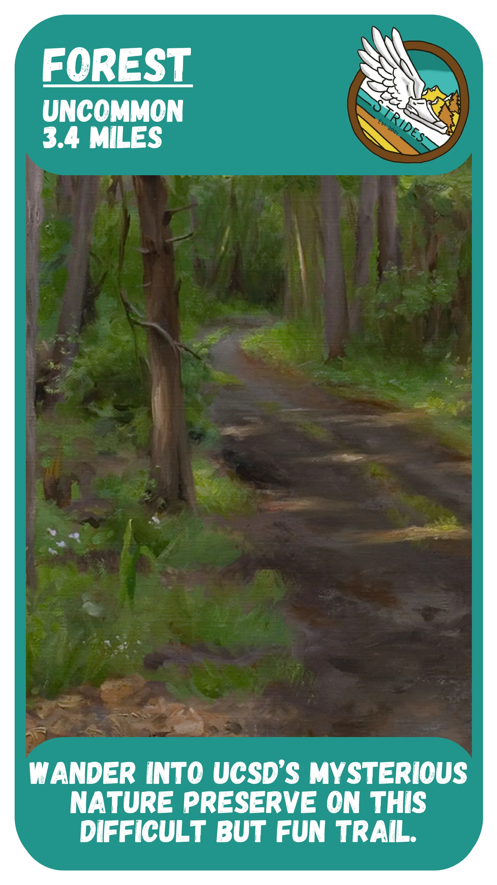
A fun and slightly hilly trail hidden on campus! The distance listed is for 1.5 loops, but feel free to exit after half a loop, 2.5, etc. We’ll try our best to keep you and ourselves from getting lost.
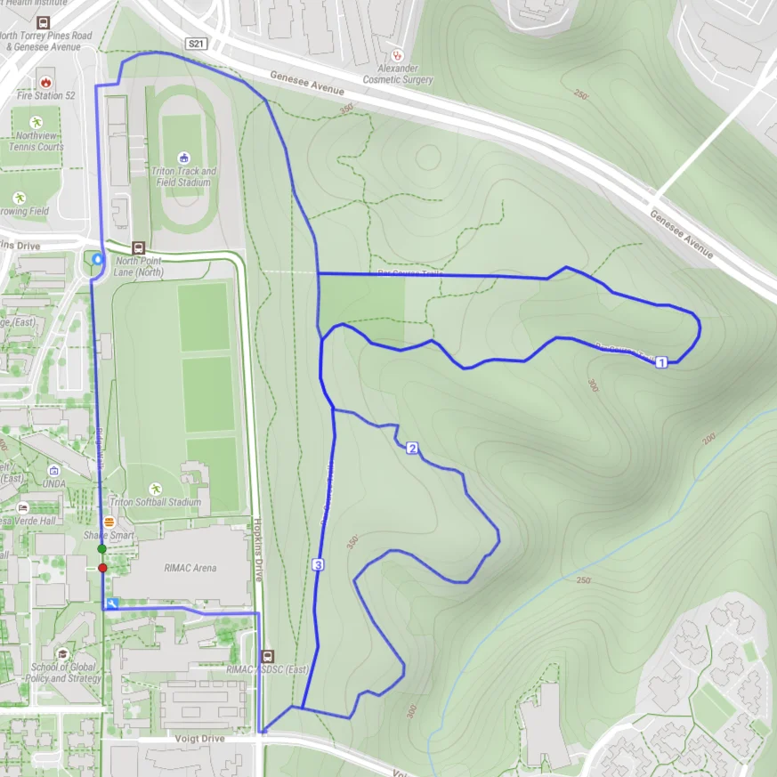
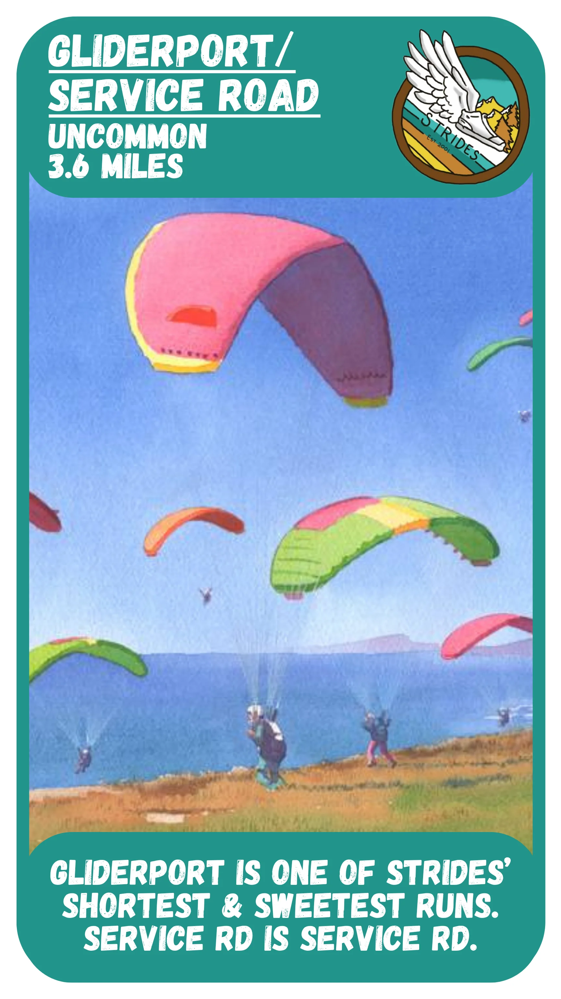
Upon reaching Black’s Beach, do yourself a favor and run with your eyes closed. Going up or down the Gliderport stairs often makes this route take longer than you’d think, so keep that in mind!
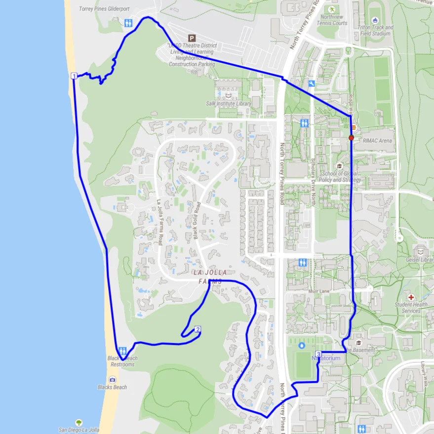
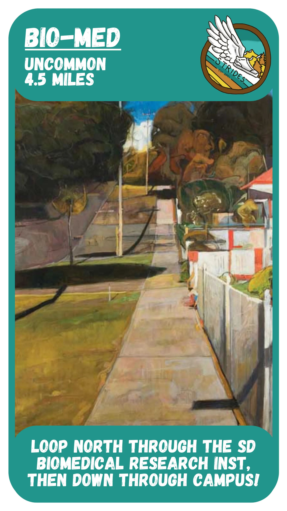
Turning off of Torrey Pines, loop through the Biomedical area, do half a loop of Forest, and then run down around campus. Our only route with separate loops for low, middle and high mileage!
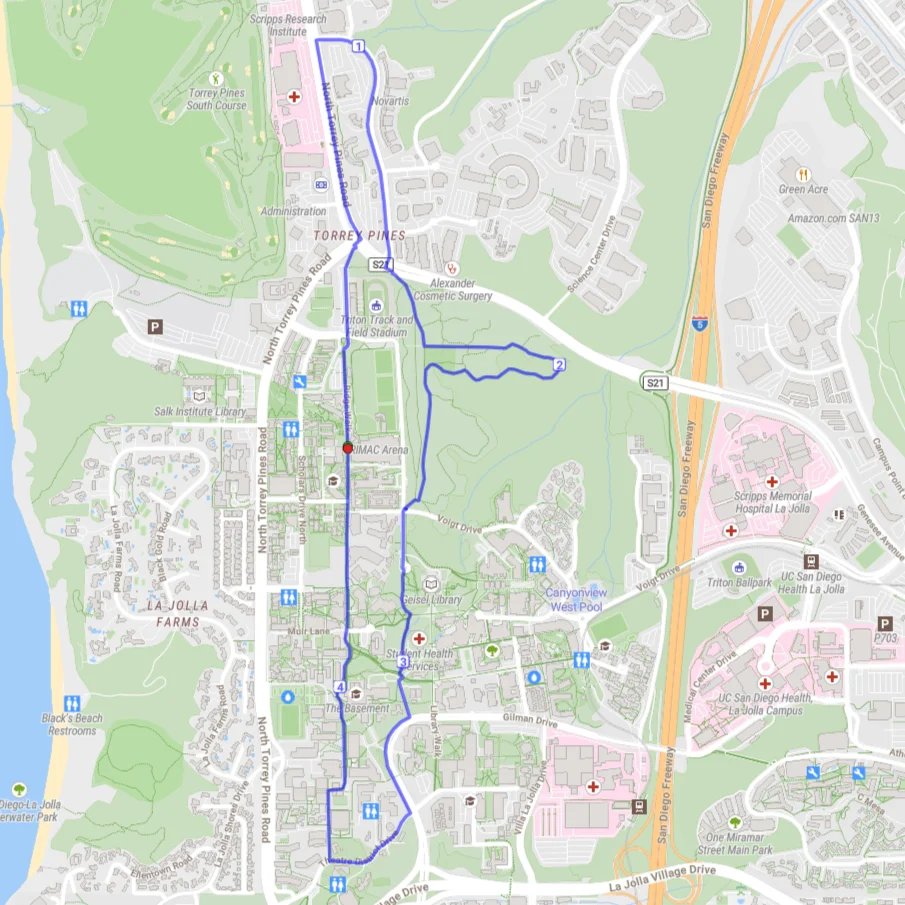
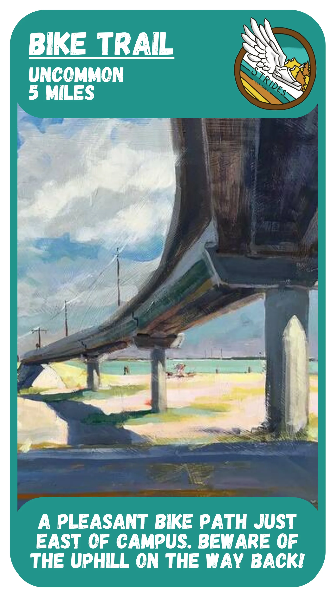
A long, gradual hill (down and then up). It’s a very peaceful bike trail, despite being close to the freeway. See Peñasquitos Creek for an extension, and Sorrento Valley to make it a half marathon.
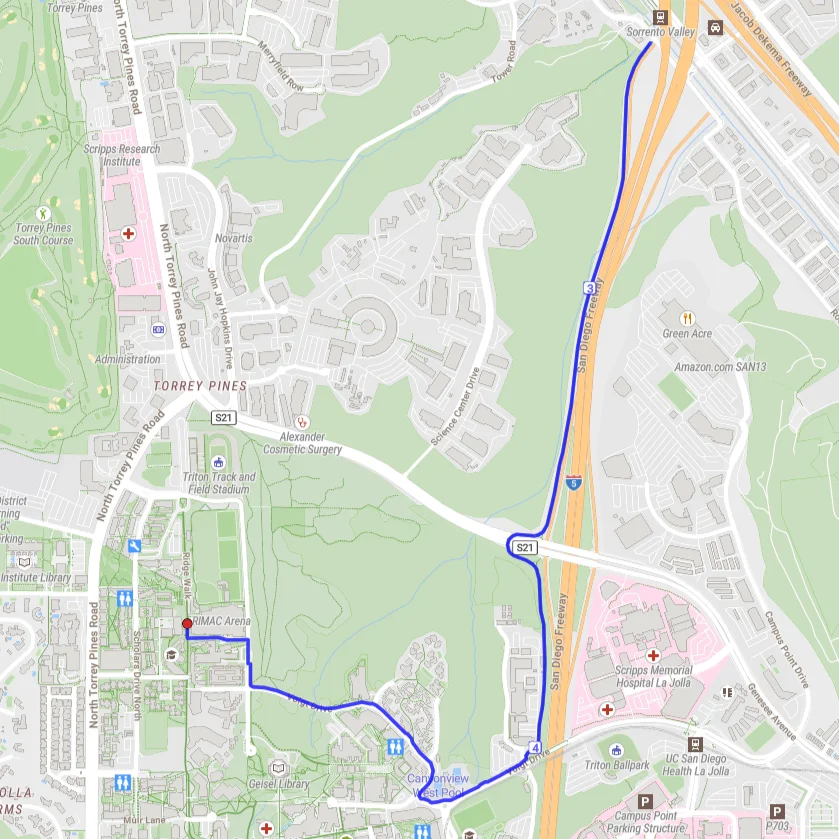
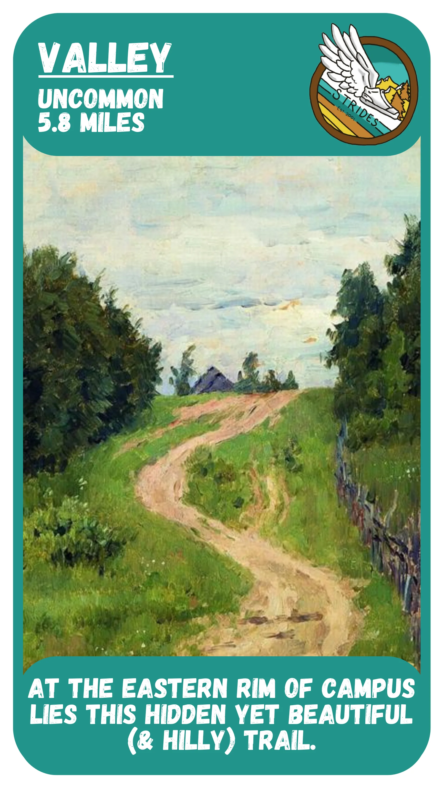
Start this rabbit-shaped run by cutting through grad housing, then drop down into a hidden valley for a pleasant trail run! But beware: the exit back up from the trail is very steep!
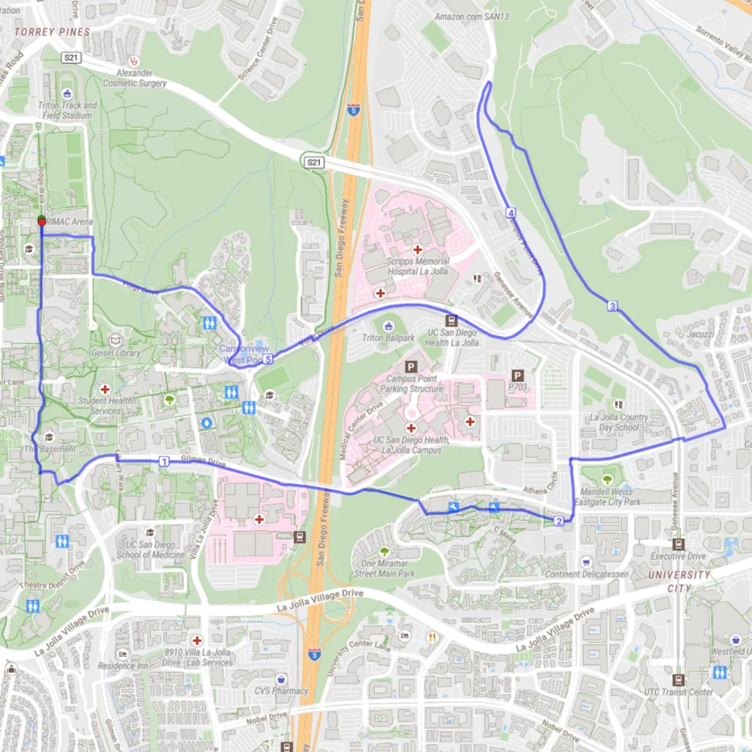
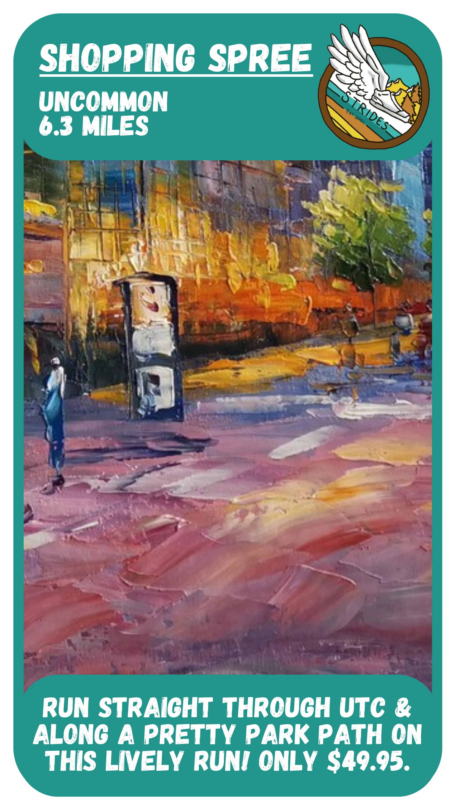
Run through grad housing, UTC, and a nice dog park all on the same run! UTC is closer to campus than you’d think, and there are surprisingly few stoplights. Don’t forget your credit card.
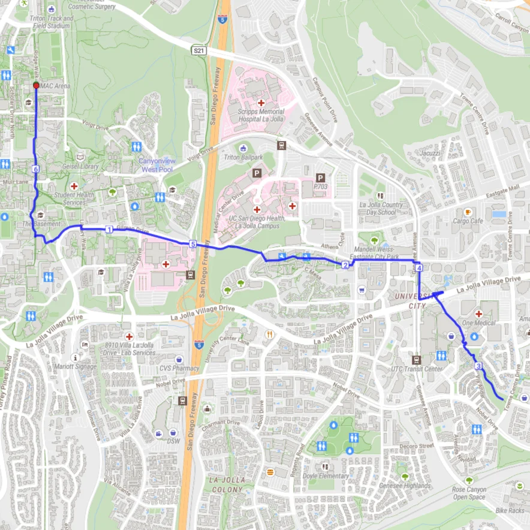